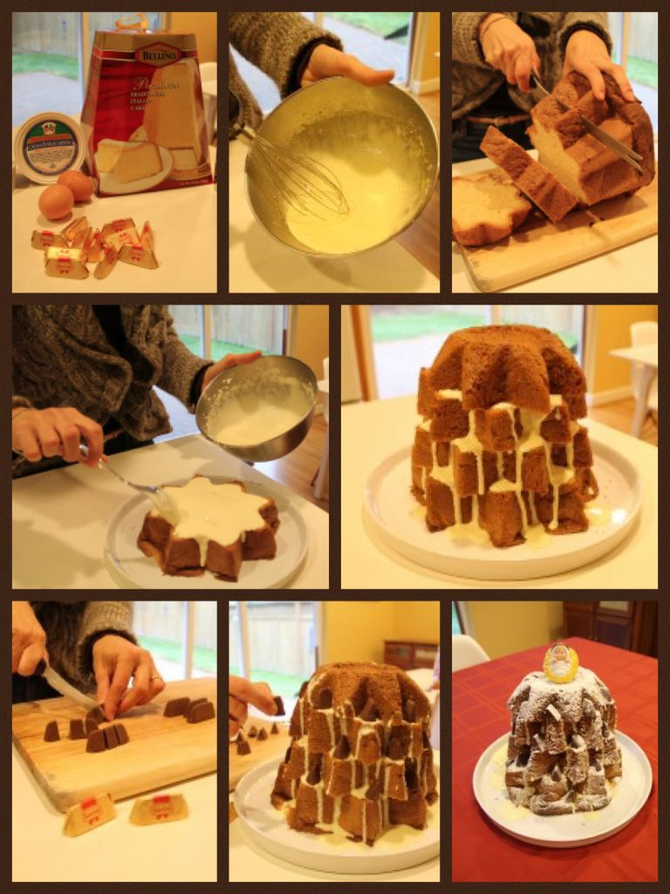

What you need: – 1 pandoro (if you cannot find it in the stores, check on Amazon) – 2 egg yolks – 4 tbsp sugar – 3 tbsp mascarpone cream – powdered sugar – Gianduiotti chocolate (optional) First beat the egg yolks with the sugar, then add the mascarpone cheese until you get a smooth cream. Set aside. Cut the pandoro in 5 layers. Spread the crema al mascarpone on each layer (the more liquid the better, it will make the cake softer). Place each layer back, without matching the edges, in order to create a Christmas tree-like shape. I used Gianduiotti chocolate to decorate the cake, but you can use any other decoration, sometimes we even use small candles. Finally, sprinkle the cake with powdered sugar and decorate the top with your favorite object (I “borrowed” baby Jesus from the nativity). Buono, buono, anzi, buonissimo!Same Italian Christmas cake recipe, 6 years later...
Every year Christmas brings joy, presents and a wide range of Christmas recipes. The one I'm sharing with you today is actually a recipe that we posted back in 2011. However, since it's an Italian classic and super easy to make, I'm going to share it with you once more.
Introducing, again, the pandoro farcito con crema al mascarpone.